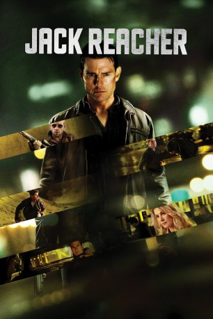

#746 Jack Reacher
 gesehen am 31.12.2016
gesehen am 31.12.2016
 
 IMDB-Wertung: 7.0 / 10
IMDB-Wertung: 7.0 / 10  Metascore: 50
Metascore: 50 
Als in einer US-Kleinstadt fünf Menschen scheinbar willkürlich einem Scharfschützen zum Opfer fallen, fällt der Verdacht auf einen Ex-Soldaten. Doch dieser beteuert seine Unschuld, die ausgerechnet der Mann beweisen soll, der ihn wegen Kriegsverbrechen hinter Gitter zu bringen versuchte. So kehrt Ex-Militärcop Jack Reacher aus der Anonymität zurück, in die er lange abgetaucht war. Schnell erkennt der harte und smarte Analytiker und Aufräumer, dass hinter dem Massaker andere Motive, vielleicht auch andere Täter stecken.
Jahr: 2012
Dauer: 130 Minuten
FSK: 16
Land: USA Studio: Paramount PicturesTonspuren: DD5.1 - ,
Untertitel: Deutsch, Englisch,
Auflösung: 1080p (1920x816) Größe: 11980 MB
Genre: Action, Krimi, Thriller
Regisseur: Christopher McQuarrie
Drehbuch: Lee Child, Christopher McQuarrie
Soundtrack: Joe Kraemer
Darsteller:
 Tom Cruise als Reacher
Tom Cruise als Reacher Rosamund Pike als Helen
Rosamund Pike als Helen Richard Jenkins als Rodin
Richard Jenkins als Rodin David Oyelowo als Emerson
David Oyelowo als Emerson Werner Herzog als The Zec
Werner Herzog als The Zec Jai Courtney als Charlie
Jai Courtney als Charlie Joseph Sikora als Barr
Joseph Sikora als Barr Michael Raymond-James als Linsky
Michael Raymond-James als Linsky Alexia Fast als Sandy
Alexia Fast als Sandy Josh Helman als Jeb
Josh Helman als Jeb Robert Duvall als Cash
Robert Duvall als Cash James Martin Kelly als Rob Farrior
James Martin Kelly als Rob Farrior Dylan Kussman als Gary
Dylan Kussman als Gary- Denver Milord als Punk
- Susan Angelo als Oline Archer
- Julia Yorks als Chrissie Farrior
 Nicole Forester als Nancy Holt
Nicole Forester als Nancy Holt- Delilah Picart als Rita Coronado
 Joe Coyle als Darren Sawyer
Joe Coyle als Darren Sawyer Peter Gannon als Mr. Archer
Peter Gannon als Mr. Archer David Whalen als Mr. Holt
David Whalen als Mr. Holt- Sophie Guest als Little Girl
 Scott A. Martin als Wesley
Scott A. Martin als Wesley- CJ Ramirez als Secretary
 Teri Clark als Night Manager
Teri Clark als Night Manager- Jarid Faubel als Man on Bus
 Sara Lindsey als Woman on Bus
Sara Lindsey als Woman on Bus- Jace Jeanes als Zec's Thug
 Efka Kvaraciejus als Zec's Thug
Efka Kvaraciejus als Zec's Thug- Kristen Dalton als Mindy
- Jordan Trovillion als Goodwill Cashier
 Annie Kitral als Pawn Shop Cashier
Annie Kitral als Pawn Shop Cashier- Lissy Gulick als Diner Waitress
- Larissa S. Emanuele als Sportsbar Waitress
 Jason McCune als Construction Foreman
Jason McCune als Construction Foreman Shane Callahan als SWAT Guy
Shane Callahan als SWAT Guy Nathan Hollabaugh als Cop
Nathan Hollabaugh als Cop- Christopher Stadulis als Cop
 Todd Bobenrieth als Traveller , uncredited
Todd Bobenrieth als Traveller , uncredited- Ryan C. Bogdewic als News Crewman , uncredited
- Lonell R. Childred als News10 Reporter , uncredited
 Mark Falvo als Journalist / Bystander , uncredited
Mark Falvo als Journalist / Bystander , uncredited- Tammy Felice als Anne Yanni , uncredited
- Cindy Fernandez-Nixon als Crime Scene Witness , uncredited
 Joe Fishel als SWAT Officer , uncredited
Joe Fishel als SWAT Officer , uncredited Vito Grassi als Riverwalk Civilian , uncredited
Vito Grassi als Riverwalk Civilian , uncredited John W. Iwanonkiw als Police Officer , uncredited
John W. Iwanonkiw als Police Officer , uncredited- Joanne Jeffers als Woman on Walkway / Onlooker , uncredited
 William Kania als Crime Scene Pedestrian , uncredited
William Kania als Crime Scene Pedestrian , uncredited- Robert Liscio als Man in Bar , uncredited
Datei: X:\2-Dilogie(G-M)\Jack Reacher\Jack Reacher (2012, FSK16, 1920x816).mkv seit 17.03.2015
Festplatte: HD Collection-2(A-Z)-3(A-M)
 Alle Filme aus Gruppe '2-Dilogie(G-M)\Jack Reacher'
Alle Filme aus Gruppe '2-Dilogie(G-M)\Jack Reacher'